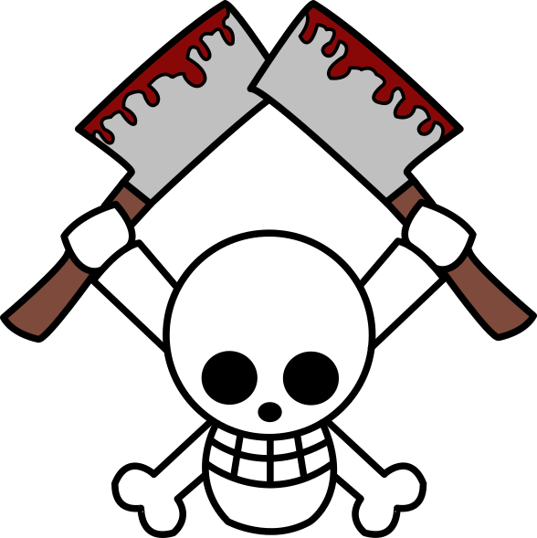
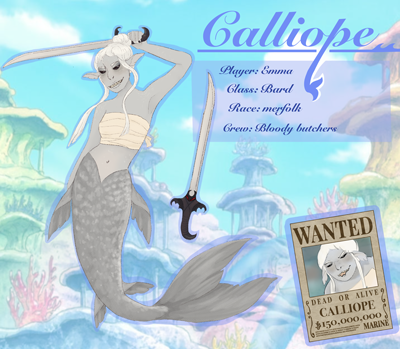
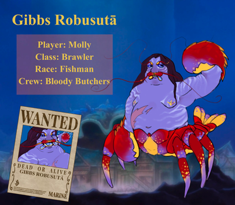
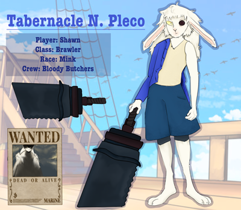
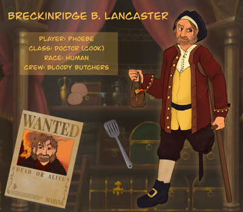
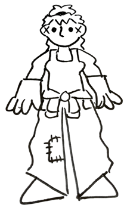
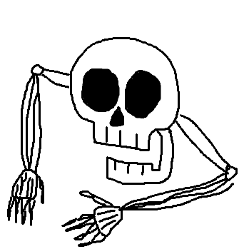
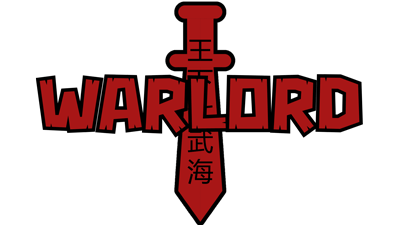

Meet the Characters
The Bloody Butchers
"The Siren of the Grand Line" Calliope

This young mermaid bard is almost as good at talking her way out of trouble as she is talking her way into trouble.
As the ship’s main diplomat, she makes connections in the world of piracy everywhere she sails.

"Crustacean Prince" Gibbs Robusutā
This lobster fishman is the heir to the Crustacean Karate style of fighting, despite the hatred he might hold towards his father.
Don’t let the claws fool you, though, this helmsman has a heart of gold and would do anything to protect his crew.

"Frost Giant" Tabernacle N. Pleco
Raised on the seas by his “Legendary” pirate father, this rabbit mink was forced to find his own way in the world after his father went missing.
This brawler uses his massive frost giant form and out-of-the-box thinking to best any opponent that crosses his path.

"Bloody Butcher" Breckinridge B. Lancaster
As an old pirate recently forced out of retirement, this human thought that he had left the seas (and everyone on them) behind him.
He uses his cooking skills, blood-based devilfruit, and long years of experience to serve as the ship’s cook, doctor, and occasional father figure.

Magnolia H. Lotus
After leaving the Marines, this young human got swept up in piracy and became the ship’s one and only shipwright.
While her timid personality may be a bit out-of-place on a pirate ship, her skills and inner strength make her invaluable to the crew.

Steven the Living Skull
This living skull with arms from the depths of Davey Jones’ Locker loves to skuttle around and play with coconuts!
What does he really do on the ship all day? No one really knows! But out rag-tag crew of pirates would not be complete without him.

Other Pirates
"Unbreakable" Victual Bastion
Emperor of the Sea and Cas’ ex-husband, this massive human is one of the Bloody Butchers’ most valuable allies out on the seas. His mend-mend fruit allows him to return nearly any object to a previous state! If only he could get his relationship back to a previous state…
"Hidden Bullet" Petrova Nina
As the sniper on Bastion’s crew, she uses her sharpshooting skills and teleportation powers to get things done.
"The Shriek" Echo
This quiet bat mink might be unassuming, but as Bastion’s first mate he uses his Pyroraptor fruit to blow away the competition.
"Legendary" Tabernacle N. Getralt
With an Emperor of the Sea like Getralt for a father, Pleco has inherited a big legacy. Getralt has earned his “Legendary” title through his long pirate career and intimidating conqueror’s haki.
"The Collector" Alison Ceasar
Newly declared an emperor of the sea after Beckham Ford’s death, this human made quick work of building a reputation for himself with his massive collection of devilfruit powers.
World Government
“Selfish Justice” Shironezu
This sleepy, and at times even lazy, Marine Admiral used to be Lotus’ commanding officer before she was abandoned at sea. After being bested and mocked one too many times, she now has a grudge against the Bloody Butchers.
“Adamant Justice” Kuroryu
This massive Marine Admiral is relentless in his pursuit of justice, so when the Bloody Butchers slip through his grasp time and time again, you can bet that he’ll only come back more determined to catch them next time.
“Crustacean King” Gibbs Kanijiru

As the inventor of the Crustacean Karate fighting style and a Warlord of the Sea, this fishman is infamous across the seas. His son, Gibbs Robusutā, holds no love in his heart for the father than abandoned his family.
“All-Knowing” Galileo
This Warlord of the Sea is a hyper-intelligent robot information broker that claims to know everything about everyone. He uses his massive airship to survey the seas and gain ever more information.
John Guard “Captain of the World Government Coast Guard”
He’s the Captain of the World Government Coast Guard.
Powers and Vessels
Death
As the personification of the Mythical Horse-Horse Fruit Model: Death, he wants nothing more than to collect all four of the Mythical Horse-Horse fruits and unite them in order to destroy the world. When he joins with a living host, he becomes the Horseman of Death and is given physical form.
Lamb
Dramatic? Angsty? A fan of wearing the color black? What more could Death ask for in a living host? This young bounty hunter quickly got in over his head when he ate the Horse-Horse Fruit Model: Death and was consumed by its power. As a helpless puppet of the strongest devilfruit ever made, his only hope was to be rescued by the Bloody Butchers.
“The King of the Seas” Davey Jones
Holding dominion over the souls of all dead pirates is a full-time job, but this ancient pirate god has to babysit the Bloody Butchers on their quest as well. He would rather be at the pirate casino…
“Deep Sea Horror” Beckham Ford
This mysterious Emperor of the Sea and wielder of the Fish-Fish Fruit Model: Davey Jones brought together the Bloody Butchers for reasons that they still don’t fully understand, but now that he’s dead and Davey Jones is acting independently, will the Bloody Butchers ever really get answers?